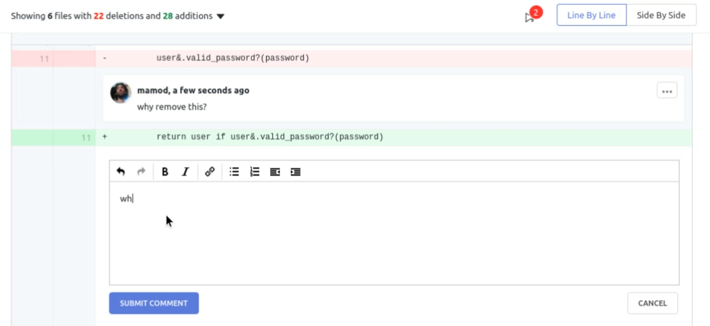
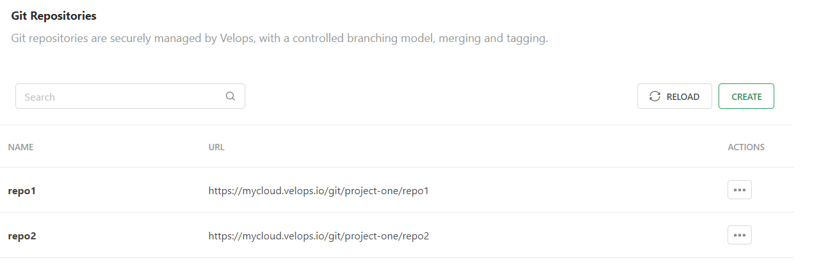
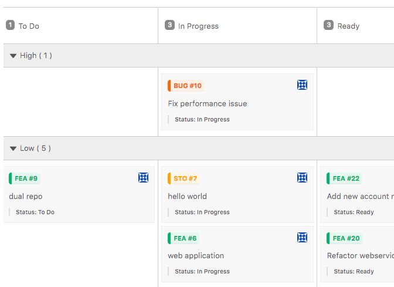
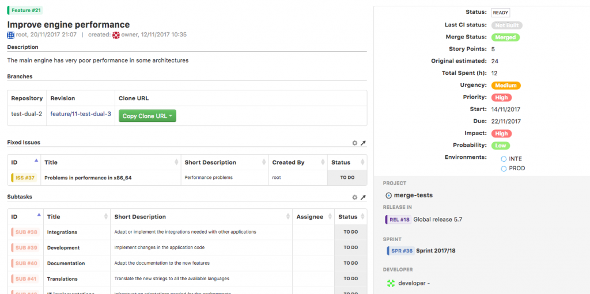
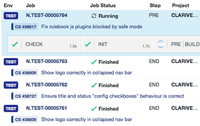
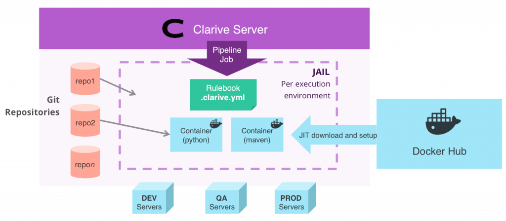
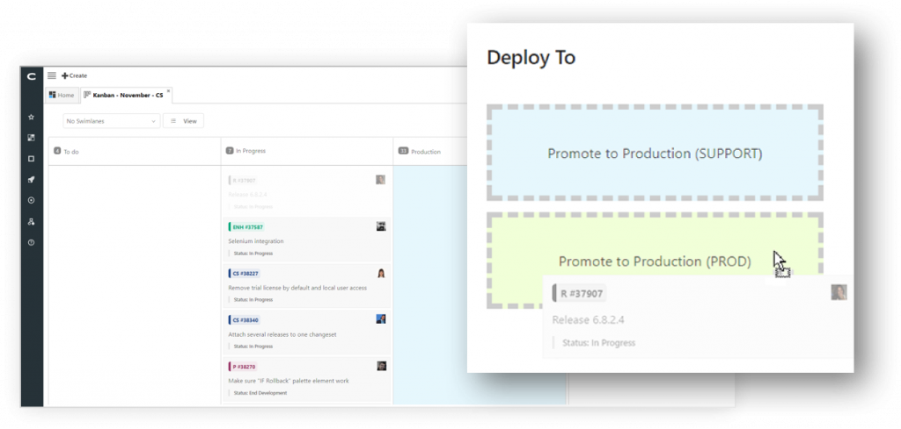

CODE
Just focus your work on creating new code
Code Review
Add comments to code and interact with your peers.


Multi-repository projects
Projects are projects, repositories are repositories. A project may have more than one repo. It's that simple.
Git push triggers
Write rules that are triggered when someone pushes code to a repository.

Fast Git Server
Clarive is a HTTP(s) based Git repository manager with project and role level authentication and branch management.
Event Rules
Kick off your event hooks when issues are created, fields are modified or workflow status changes.
Rulebooks
Add a
.clarive.yml file to your repository and define your DevOps automation pipelines using rule-based event triggers.Write DevOps code in your language
Turn your Python, Node, Ruby, Go (or any language really) into reusable rules for your rulebooks.
Orchestration Webhooks
Expose your automation rules to other services across the networks creating devops microservices that can be reused and are tied with the flow of your delivery.
Git push triggers
Write rules that are triggered when someone pushes code to a repository.
TRACK
Track your issues or tasks with our awesome Topic system

Scrum Out-of-the-box
Velops comes setup with a set of topic categories that can scale from simple coding features/bugfixes to complete epics, user stories and sprints.
Scrum Out-of-the-box
Velops comes setup with a set of topic categories that can scale from simple coding features/bugfixes to complete epics, user stories and sprints.

Built-in Workflow Engine
You can customize workflows of Tasks for better control when and where to move your topics from and to and who can do it.
Multi-Project Releases
Releases can group changes from more than one project at the same time. This makes it easier to manage complex releases with many teams working at once.
Built-in Workflow Engine
You can customize workflows of Tasks for better control when and where to move your topics from and to and who can do it (EE only).
Custom Dashboards
Create your own dashboards, and rearrange them with drag-and-drop.
Nested Issues, Epics, Tasks
Features can belong to Epics and Releases. Issues tied to bugfixes, nested into user stories. Levels can be easily navigated and searched.
Column Lists
Kanban topics can be grouped into any lists, so that you can bisect your project in many ways.
Swimlanes
Swimlanes lets your team quickly view and rearrange posts in a kanban board.
DEPLOY
Deploy your products to different environments just with one click
CI/CD Engine
Run pipelines on a schedule, monitored and on push to repository. Velops will monitor execution and let you ajust.


Docker under the hood
All CI/CD runs in a Docker service in the Velops server or as part of your swarm.
Deploy-from-kanban®
Drop your kanban cards and into an environment to create a deployment.

Environment Management
Setup environments, their variables and a workflow for progressing releases on demand.
Release Planning
Plan your releases, add or remove features and bugfixes and freeze them when ready to deploy. Releases in Velops are not simple tags. They have a workflow and can be staged and reviewed.
Concurrency Control
Setup critical sections dynamically to prevent simultaneous deployments from running into each other.
Scheduled deployments and nightly builds
Create repeatable jobs or schedule on-demand deployments to run on a given date/time.
Pipeline profiling
Avoid bottlenecks optimizing your pipelines and overall workflow with execution profiling data.
Rollback
Rollback your deployments by running your rules against the previous known safe version.